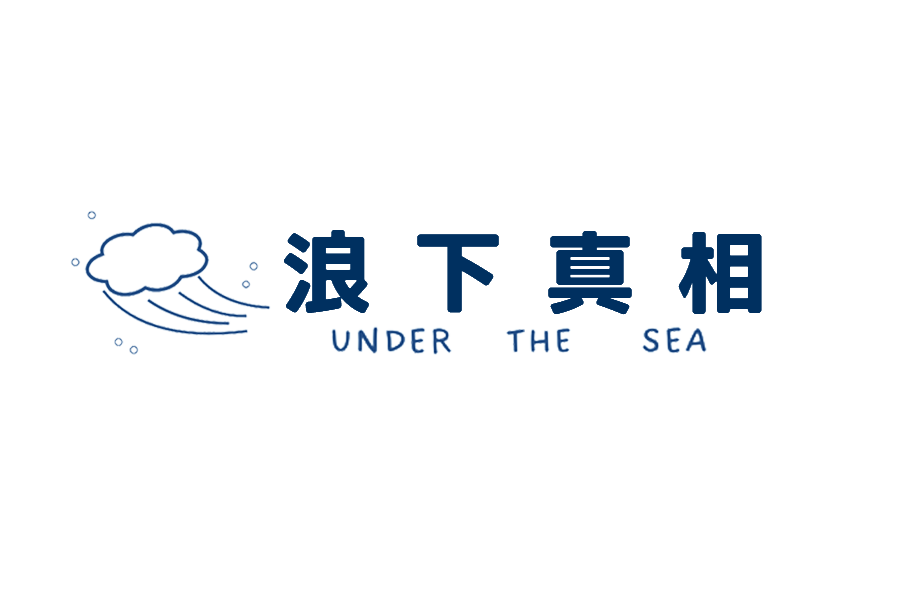
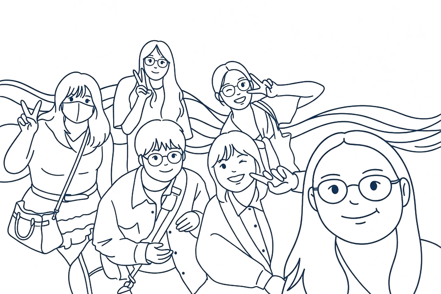
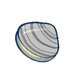
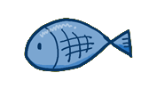
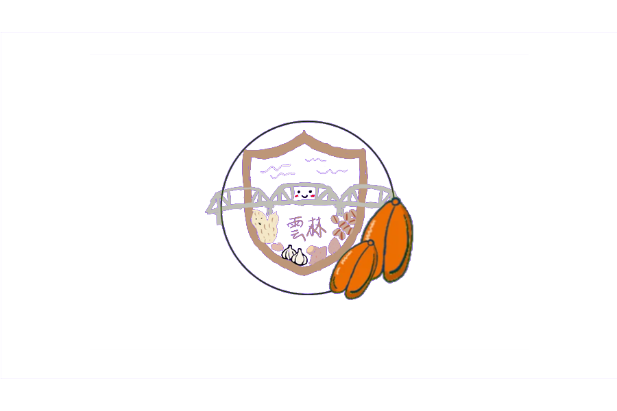
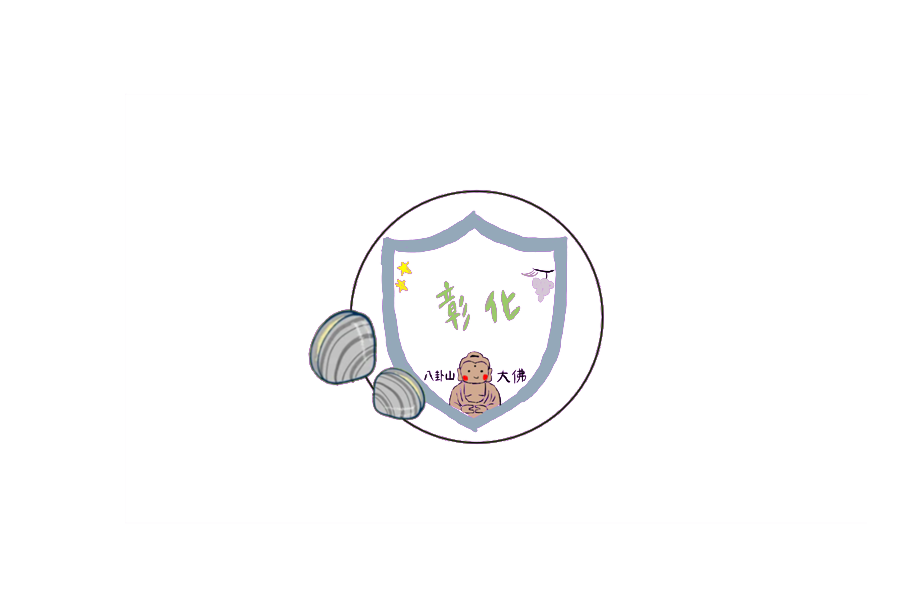
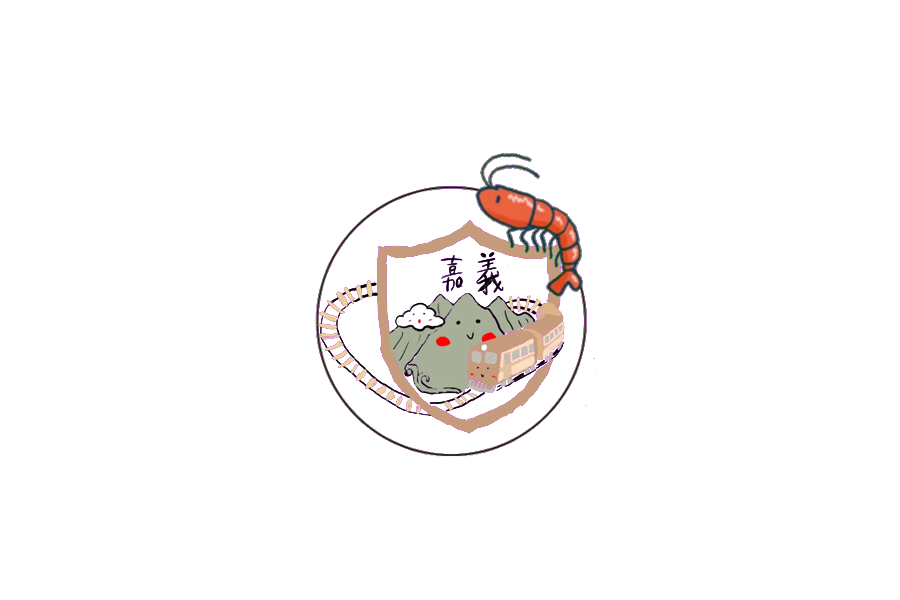
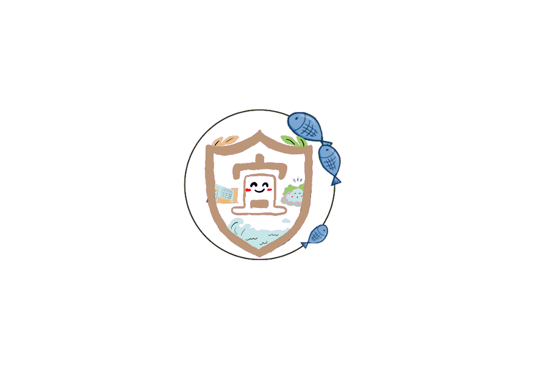

「浪下真相」此網站建立的目的，便是想向讀者呈現時下台灣養殖漁業的發展， 透過聚焦於特定的水產品種，展現養殖業者的轉型力量， 看著他們是如何一步步面對外界所帶來的挑戰。

你對台灣的養殖漁業了解多少？一起挑戰有趣的漁業知識，看看自己能答對多少題！

如果你是一種魚，會是哪一種？透過幾道趣味問題，探索屬於你的魚群性格！
從不同縣市的養殖場出發，看看在地業者如何面對環境與產業挑戰， 也一起記錄那些正在發生的轉型故事。




從趣味測驗出發，探索漁業知識，也發現屬於你的魚群性格。
你對台灣的養殖漁業了解多少？ 一起挑戰有趣的漁業知識，看看自己能答對多少題！
如果你是一種魚，會是哪一種呢？ 回答幾個趣味問題，找出最符合你的魚群性格！
左右滑動或點選箭頭，探索不同測驗
透過我們的鏡頭看見漁民、產業與土地的故事。